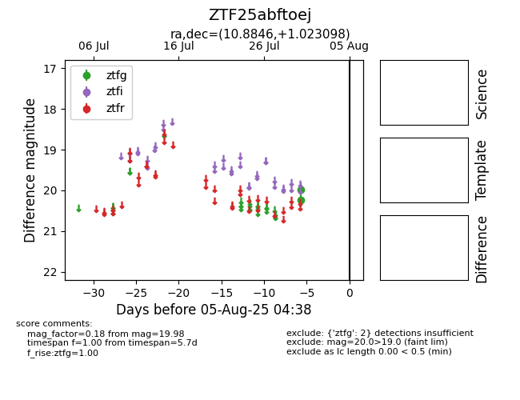

Target ZTF25abftoej at 2025-08-05 04:38, see:
FINK: fink-portal.org/ZTF25abftoej
Lasair: lasair-ztf.lsst.ac.uk/objects/ZTF25abftoej
ALeRCE: alerce.online/object/ZTF25abftoej
alt names
ZTF25abftoej (ztf,fink)
coordinates:
equatorial (ra, dec) = (10.8846,+1.02310)
galactic (l, b) = (118.7526,-61.78453)
photometry
last ztfg=19.98
2 ztfg detections
